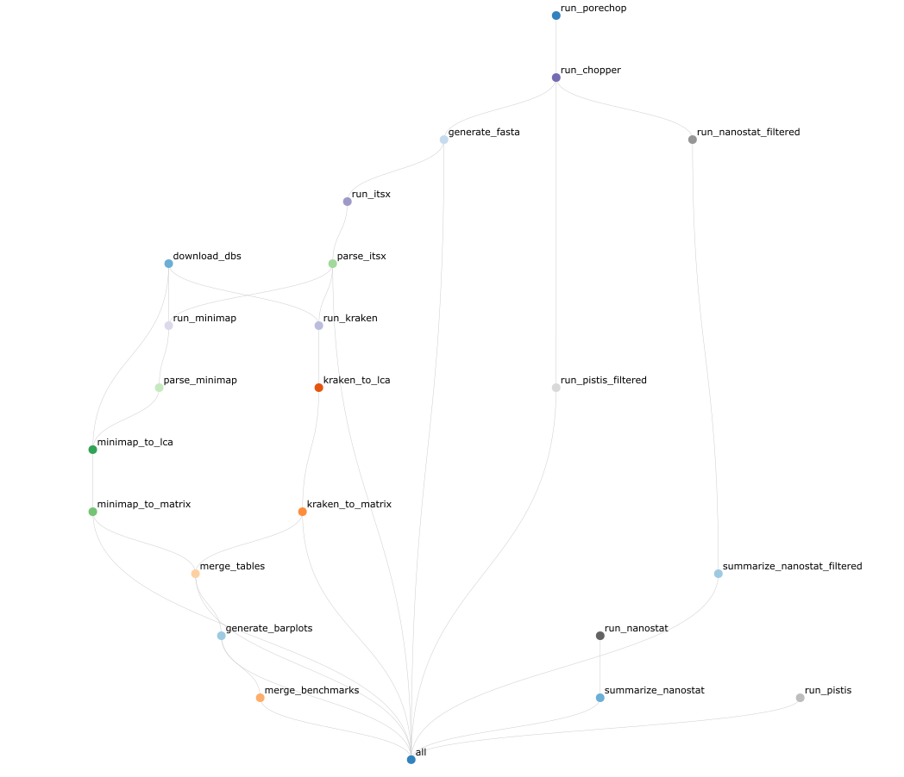

mamba create --name snakemake_f_NanoITS -c conda-forge -c bioconda snakemake=7.32.4 python=3.11.6 tabulate=0.8
cd <path_to_install_software>
git clone https://github.com/ndombrowski/NanoITS.git
mv NanoITS/ NanoITS_0.4NanoITS
Introduction
NanoITS is a classifier for long-read Oxford Nanopore data of the eukaryotic 18S/SSU-ITS1/2 operon.
When giving the tool some nanopore long-read data it will:
- Provide a quality report of the raw reads
- Check the reads for adapters and barcodes and if present trim the reads
- Remove low-quality and short reads
- Provide a quality report for the cleaned reads
- Identify and separate the ITS1, ITS2 and 18S rRNA gene using the Uniprot and Silva database, respectively
- Classify the SSU, ITS2 and/or ITS1 gene using kraken2 and/or minimap2
- Generate taxonomic barplots and OTU tables
For a more detailed explanation, check out the manual.
Below you can find the full workflow:

Quick start
To run NanoITs, install snakemake via conda and the clone the directory from github via:
Provide your sample names and path to the samples as a comma-separated file, for example, a file looking similar as the one provided in example_files/mapping.csv. Sample names should be unique and consist of letter, numbers and - only. The barcode column can be left empty as it is not yet implemented. The path should contain the path to your demultiplexed, compressed fastq file.
Adjust config/config.yaml to configure the location of your mapping file as well as specify the parameters used by NanoITs.
NanoITs can then be run with:
conda activate snakemake_f_NanoITS
snakemake --use-conda --cores <nr_cores> \
-s <path_to_NanoITS_install>/workflow/Snakefile \
--configfile config/config.yaml \
--conda-prefix <path_to_NanoITS_install>/workflow/.snakemake/conda \
--rerun-incomplete --nolock For a more detailed explanation, check out the manual.
NanoITS on Crunchomics
NanoITS is installed on the UvA crunchomics HPC. If you have access to crunchomics you can be added to the amplicomics share in which NanoITS is set up. To be added, please send an email with your Uva netID to Nina Dombrowski.
To be able to use software installed on the amplicomics share, you first need to ensure that conda is installed. If it is, then you can run the following command:
conda config --add envs_dirs /zfs/omics/projects/amplicomics/miniconda3/envs/This command will add pre-installed conda environments in the amplicomics share to your conda env list. After you run conda env list you should see several tools from amplicomics, including QIIME2 and Snakemake. Snakemake is what we need to run NanoITS.
Next, you can setup your working environment. Change the path of the working directory to wherever you want to analyze your data:
#define the directory in which you want to run your analyses
wdir="/home/$USER/personal/my_folder"
#go into the working directory
cd $wdirPreparing the configuration file
Get the config.yaml file:
#copy config yaml (comes with NanoITS)
cp /zfs/omics/projects/amplicomics/bin/NanoITS_0.4/config/config.yaml .The config.yaml tells NanoITS how you want to run the software and how to find the sequencing data. Start by opening the config.yaml with an editor, such as nano. There are several things you can modify:
The project name
You can provide the project name in project: "run_v1". Your results will be generated in the folder you start the snakemake workflow in and the results will be generated in results/<project_name> (results/run_v1 if you use the default settings). Your project name can contain letters, numbers, _ and -. Do not use other symbols, such as spaces or dots.
The mapping file
Here, you need to provide the path to a comma-separated mapping file that describes the samples you want to analyse, i.e. samples_file: "input/mapping.csv". In this example, the mapping file should be located in the input folder. If the mapping file is in your working directory, use samples_file: "mapping.csv".
The classifiers to use
You can choose what classifiers you want to use in classifiers: ["minimap2", "kraken2"]. Currently, two classifiers are implemented: (a) the alignment-based classifier minimap2 and (b) the kmer-based classifier kraken2. You can use both or either of the two classifiers.
The markers to investigate
You can select what markers you want to analyse in markers: ["SSU", "ITS1", "ITS2"]. The workflow was developed for primers targeting both the SSU, ITS1 and ITS2 but the workflow will also run for either option selected and we plan to in the future extend the workflow to also accept the LSU.
Other parameters
Finally, you can change tool specific parameters: If desired, there are several parameters that can be changed by the user, such as the numbers of threads to use, the settings for the read filtering or the classification and so on. The configuration file provides more information on each parameter.
To save and close the nano screen:
- Press
Ctr+x - Type
Yto save - Press
enterto save the changes without changing the file name
Preparing the mapping file
Next, you need to write a mapping file with nano mapping.csv. This file gives each sample a unique name and also tells NanoITS were to find the sequencing data. Ensure that were you generate the mapping file is consistent with the location that you gave in the config.yaml.
The mapping file should look something like this and needs to contain the following columns:
sample: The names of your sample. This id will be used to label all files created in subsequent steps. Your sample names should be unique and only contain letters, numbers and-. Do not use other symbols, such as spaces, dots or underscores in your sample names.barcode: The barcode ID. Can be empty as it is not actively used in the workflow as of nowpath: Path to the fastq.gz files. You can provide the relative path (i.e. relative to the working directory you start the snakemake workflow in) or absolute path (i.e. the location of a file or directory from the root directory(/)). The workflow accepts one file per barcode, so if you have more than one file merge these files first, for example using thecatcommand.
sample,barcode,path
bc01,barcode01,data/barcode01.fastq.gz
bc02,barcode02,data/barcode02.fastq.gz
bc03,barcode03,data/barcode03.fastq.gzTo save and close the nano screen:
- Press
Ctr+x - Type
Yto save - Press
enterto save the changes without changing the file name
Preparing a dry-run
To test whether the workflow is defined properly do a dry-run first. You don’t need to change anything if you use the Crunchomics install. If you have installed the software on your own system, ensure that you:
- Provide the path to where you installed NanoITS afer
--s - Provide the path to the edited config file after
--configfile - Provide the path to where you want snakemake to install all program dependencies after
--conda-prefix. We recommend to install these into the folder in which you downloaded NanoITS but you can change this if desired
#activate conda environment with your snakemake installation, i.e.
conda activate snakemake_f_NanoITS
#test if everything runs as extended (edit as described above)
snakemake --use-conda --cores 1 \
-s /zfs/omics/projects/amplicomics/bin/NanoITS_0.4/workflow/Snakefile \
--configfile config.yaml \
--conda-prefix /zfs/omics/projects/amplicomics/bin/NanoITS_0.4/workflow/.snakemake/conda \
-np If the above command works and you see This was a dry-run (flag -n). The order of jobs does not reflect the order of execution. all is good and you can submit things to a compute node.
Submit a sbatch job
The NanoITS installation comes with an example sbatch script that you can move over to where you do your analyses. This script allows you to submit the job to the compute nodes.
#cp template batch script (comes with NanoITS)
cp /zfs/omics/projects/amplicomics/bin/NanoITS_0.4/jobscript.sh .The jobscript is setup to work with NanoITS in the amplicomics environment and you should not need to change anything if your config.yaml is set up correctly.
The script does the following:
- Requests 20 crunchomics cpus and 200G of memory. One can set this lower, but for testing purposes you might keep these values. The can be changed with
#SBATCH --cpus-per-task=20and#SBATCH --mem=200. Depending on the size of the dataset you can try increasing the number of CPUs. - Ensures that conda is loaded properly by running
source ~/.bashrc. The bashrc is a script executed once a user logs in and holds special configurations, such as telling the shell where conda is installed. If you run into issues that are related to conda/mamba not being found then open the this file withnano ~/.bashrcand check that you have a section with text similar to# >>> conda initialize >>>. If this is not present you might need to runconda init bashto add it. - Activates the snakemake conda environment that is found in the amplicomics share with
conda activate snakemake_f_NanoITS - Runs NanoITS. When using the script as is, the script assumes that NanoITS is installed at this path
/zfs/omics/projects/amplicomics/bin/NanoITS_0.4and that the config.yaml is located in the folder from which you analyse the data. If that is not the case, change the paths accordingly
Next, you can submit the script with:
sbatch jobscript.shThis will generate a log file that should something like this NanoITS-ndombro-50633-4294967294.log. You can check the progress with tail NanoITS-ndombro-50633-4294967294.log. If you see a comment that your job finished, then NanoITS finished successfully.
In the results folder, you will find different files generated for each step, the most useful ones are the otu_table.txt in the tables folder or the fasta files for the extracted SSU and ITS1 region. If you run into errors its worth inspecting the other files as well. A full list of generated output files can be found here.
Additionally, you can generate a small report as follows. To view the report, download the report.html to your own computer and view it in your favorite browser.
snakemake --report report.html \
--configfile config.yaml \
-s /zfs/omics/projects/amplicomics/bin/NanoITS_0.4/workflow/SnakefileCommon Issues and Solutions
- Issue 1: My run stops with an error while running kraken or minimap2
- Solution 1: Check the output in the itsx folder for each sample and ensure that ITS1_final.fasta and SSU_final.fasta are not empty. The classifiers with crash if that is the case. If this happens you could try lowering the
min_its_lengthin theSeparate ITS1 and SSUor changemarkers: ["SSU", "ITS1"]to only those markers that were successfully separated
- Solution 1: Check the output in the itsx folder for each sample and ensure that ITS1_final.fasta and SSU_final.fasta are not empty. The classifiers with crash if that is the case. If this happens you could try lowering the
- Issue 2: My run stops with an error when generating the generate_barplots.
- Solution 1: Check that the merged.outmat.tsv OTU tables in results/run_v1/classification/kraken2 and minimap2 are not empty.
- Issue 3: My run stops at the first step
- Solution 3: If NanoITS stops at the beginning and does not even read in the data that in most of the cases has to do with errors in the mapping or config file. Ensure that
- You have unique IDs in the mapping file and that you don’t use any special symbol
- Ensure that the path to your sequencing data is correct (you can check the path with ls)
- Ensure that the format of the config file is still intact. I.e. do not remove any quotes or brackets around the parameters (i.e.
project: "run_v1",classifiers: ["minimap2", "kraken2"]) and keep the extra spaces in front of some parameters as for example in thefilteringsection. These syntax elements are important for the script to work
- Solution 3: If NanoITS stops at the beginning and does not even read in the data that in most of the cases has to do with errors in the mapping or config file. Ensure that